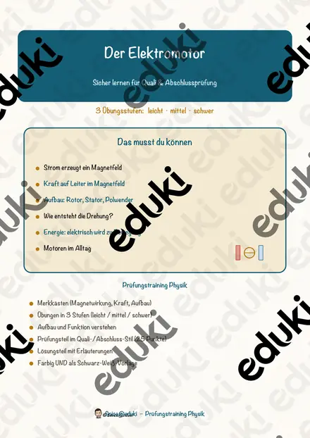
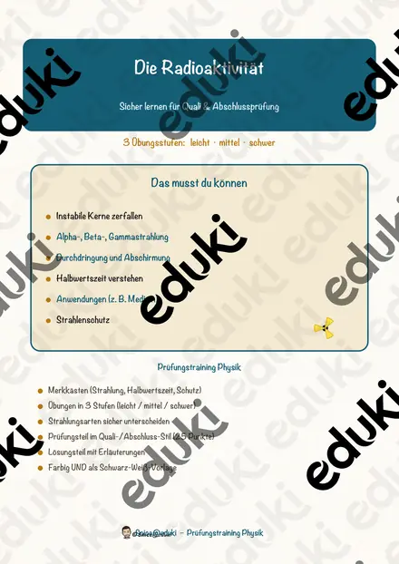
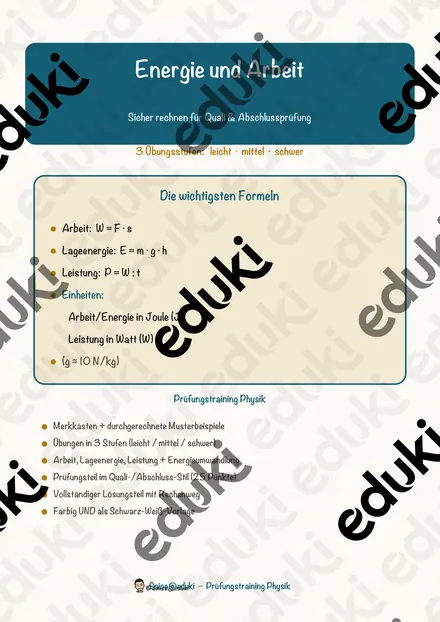
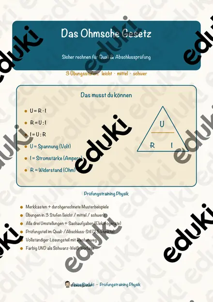

Die Wärmedämmung – wo das Haus Wärme verliert – Lesespurgeschichte mit Rätselaufgaben (Klasse 9)

Richtig lüften im Winter – Luftfeuchtigkeit, Taupunkt und Schimmel – Lesespurgeschichte mit Rätselaufgaben (Klasse 9)

Der Dynamo – Lesespurgeschichte mit Rätselaufgaben (Klasse 9)

Die Röntgenröhre – Lesespurgeschichte mit Rätselaufgaben (Klasse 9)

Die Leuchtdiode – Lesespurgeschichte mit Rätselaufgaben (Klasse 9)

Die Glasfaser – Lesespurgeschichte mit Rätselaufgaben (Klasse 9)

Der Laser – Lesespurgeschichte mit Rätselaufgaben (Klasse 9)

Die Sonne – Lesespurgeschichte mit Rätselaufgaben (Klasse 9)

Der Lautsprecher – Lesespurgeschichte mit Rätselaufgaben (Klasse 9)

Das Riesenrad – Lesespurgeschichte mit Rätselaufgaben (Klasse 9)

Die Mikrowelle – Lesespurgeschichte mit Rätselaufgaben (Klasse 9)

Der Blitzableiter – Lesespurgeschichte mit Rätselaufgaben (Klasse 9)

Das Elektroauto – Lesespurgeschichte mit Rätselaufgaben (Klasse 9)

Das Stromnetz – Lesespurgeschichte mit Rätselaufgaben (Klasse 9)

Der Airbag – Lesespurgeschichte mit Rätselaufgaben (Klasse 9)

Die Rakete – Lesespurgeschichte mit Rätselaufgaben (Klasse 9)

Die Wärmepumpe – Lesespurgeschichte mit Rätselaufgaben (Klasse 9)

Der Verbrennungsmotor – Lesespurgeschichte mit Rätselaufgaben (Klasse 9)

Die Solarzelle – Lesespurgeschichte mit Rätselaufgaben (Klasse 9)

Der Generator – Lesespurgeschichte mit Rätselaufgaben (Klasse 9)

Der Transformator – Lesespurgeschichte mit Rätselaufgaben (Klasse 9)

Der Viertaktmotor – Lesespurgeschichte mit Rätselaufgaben (Klasse 9)

Der Elektromotor – Prüfungstraining Physik (Klasse 9)

Die Radioaktivität – Prüfungstraining Physik (Klasse 9)

Energie und Arbeit – Prüfungstraining Physik (Klasse 9)

Das Ohmsche Gesetz – Prüfungstraining Physik (Klasse 9)
Keine Materialien gefunden – versuch einen anderen Suchbegriff oder Filter.